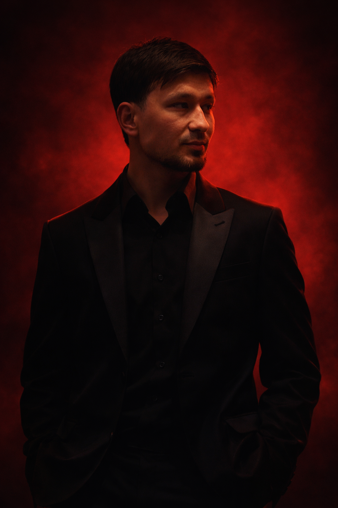

Ulugbek Gaffarov —
5 yildan ortiq tajriba davomida men barni 0 dan sistemali ishga tushirish, menyu yaratish, baristalarni o‘qitish, ichimliklar sifati nazorati va kafe biznesi bo‘yicha amaliy yechimlar berib kelmoqdaman.
Professional barista in Uzbekistan with 5+ years experience. Coffee consultant in Tashkent offering barista training, menu creation, coffee business setup and quality control.
5+
Yillik tajriba
4+
Yirik loyihalar
100%
Amaliy yondashuv
7oz Cafe
Hozirda 7oz Cafeda product manager sifatida faoliyat yuritaman.
- Barni 0 dan ishga tushirish
- Menu ishlab chiqish
- Baristalarni o‘qitish
- Sifat nazorati
- Coffee business consulting

Men haqimda
Qahva men uchun shunchaki ichimlik emas — bu tizim, sifat va tajriba.
Men professional barista sifatida nafaqat ichimlik tayyorlash, balki butun coffee bar jarayonini mukammal yo‘lga qo‘yish bilan shug‘ullanaman. Loyihalarda men tizim, tezlik, servis, ta’m barqarorligi va rentabellikni birga olib boraman.
Agar sizga yangi coffee point ochish, mavjud barni kuchaytirish, menyuni qayta tuzish, jamoani tayyorlash yoki ichimliklar sifati bo‘yicha amaliy ekspert kerak bo‘lsa, men bu jarayonni to‘liq yo‘lga qo‘yib bera olaman.
Tizimli yondashuv
Barni 0 dan professional model asosida ishga tushirish.
Team training
Baristalarni amaliy va tezkor o‘qitish.
Menu engineering
Talabgir va sotiladigan ichimlik menyusi yaratish.
Quality control
Har bir ichimlikda bir xil sifatni ushlab turish.
Xizmatlar
Nimalarni qilib bera olaman
Coffee bar va kafe yo‘nalishida kerak bo‘ladigan asosiy jarayonlarni amaliy ravishda yo‘lga qo‘yaman.
Barni 0 dan sistemali ishga tushirish
Coffee point yoki kafe bar qismini boshidan to‘g‘ri struktura bilan yo‘lga qo‘yib beraman.
Menu qilish
Mijozga yoqadigan, sotiladigan va amalda ishlaydigan ichimliklar menyusini ishlab chiqaman.
Barista o‘rgatish
Baristalarni ichimlik tayyorlash, servis, tezlik va standartlar bo‘yicha o‘qitaman.
Ichimlik sifat nazorati
Ta’m, ko‘rinish, retseptura va tayyorlash sifati doimiy bir xil chiqishini nazorat tizimi bilan yo‘lga qo‘yaman.
Coffee business bo‘yicha maslahat
Coffee business, bar operation va servis jarayonlari bo‘yicha savollarga amaliy javob va yechim beraman.
Product yondashuv
Ichimlikni shunchaki tayyorlash emas, balki uni mahsulot sifatida rivojlantirishga yordam beraman.
Barni 0 dan to‘liq ishga tushirib beraman
Agar siz kafe ochmoqchi bo‘lsangiz yoki mavjud barni kuchaytirmoqchi bo‘lsangiz — men sizga to‘liq tizim qilib beraman: menu, training, setup, quality control.
Hamkorlikni boshlashTajriba
Ishlagan joylarim va loyihalarim
Quyidagi joylarda ishlab, amaliy tajriba orttirganman.
Qahva Group
Coffee yo‘nalishida tajriba va amaliy ish faoliyati.
Mumino Cafe
Bar jarayonlari, ichimlik sifati va mijoz tajribasi ustida ishlaganman.
Grano Pizza
Coffee va servis yo‘nalishida real loyiha tajribasi.
7oz Cafe — Product Manager
Hozirda 7oz Cafe’da product manager sifatida faoliyat yuritmoqdaman.
Tamper Akademiya — Product Manager
Loyihalarga qiziqish bildirgan mijozlar bilan ishlash, akademiya bilan hamkorlikda menu qilish va baristalarni o‘qitib berish.
Galereya
Real coffee vibe portfolio
Professional ish jarayonlari, coffee atmosphere va real portfolio lavhalari.

FAQ
Ko‘p beriladigan savollar
Barni qancha vaqtda qilib berasiz?
Odatda 3-7 kun ichida to‘liq coffee bar setup qilib beraman.
Barista training bormi?
Ha, professional barista training Uzbekistan bo‘yicha xizmat beraman.
Coffee consulting xizmatlari bormi?
Ha, coffee consultant sifatida Tashkentda amaliy biznes maslahat beraman.
Narxlar qancha?
Loyiha hajmiga qarab o‘zgaradi. O‘rtacha $300-$2000 oralig‘ida bo‘lishi mumkin.
Online maslahat berasizmi?
Ha, Telegram orqali ham to‘liq yordam beraman.
Bog‘lanish
Hamkorlik, maslahat yoki loyiha uchun bog‘laning
Agar sizga professional barista, coffee menu ekspert, training yoki coffee bar setup bo‘yicha yordam kerak bo‘lsa, men bilan aloqaga chiqing.